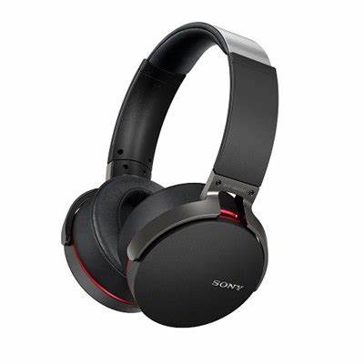

Los audífonos con la funcionalidad Bluetooth te permiten conectarte de forma inalámbrica a una gran variedad de dispositivos. Puedes escuchar música, responder al teléfono y escuchar la televisión o la radio directamente desde tus audífonos o a través de una aplicación móvil, ¡a una distancia de hasta 100 metros!
Actualmente existen varios modelos de audífonos con una alta calidad, fiabilidad y rendimiento. Elegir el mejor audífono para tus necesidades va a depender de tu grado de pérdida auditiva y estilo de vida. 